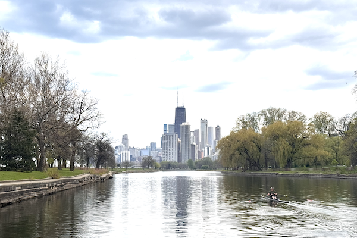
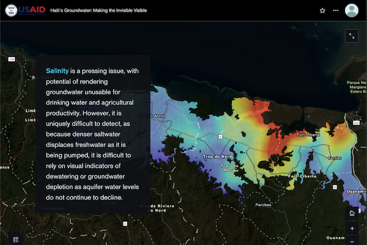
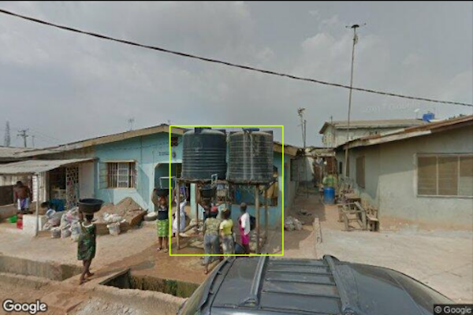
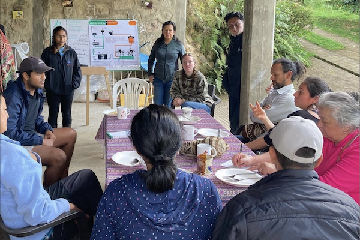
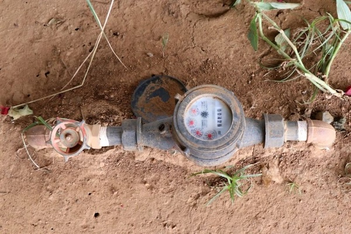

Home
Projects
Presentations
Work History
Neil Patel
Urban Economist | Water Security & Climate Adaptation
Projects

River in Reverse: A Cultural History of the Chicago River
Substack
Ongoing

Aquifer Characterization and Vulnerability Mapping for the Plaine du Nord-Massacre System in Haiti
USAID Fragile Waters
October 2024

Deep Learning for Water Point Mapping Using Street-Level Imagery
MIT Senseable City Lab
July 2024

Data Collection and Monitoring for Vermifilter Toilets in Agua Bonita, Colombia
MIT D-Lab
August 2023

Impact Evaluation of Meter Replacements on Utility Revenue Collection in Kenya
USAID WASH-FIN 2
August 2023
Women and Water Conservation: Intra-Household Learning in Jordan’s Agriculture Sector
MIT Economics
May 2023
Strengthening Systems-Based Leak Prevention in Ciudad de Mexico Using Blockchain
UT Austin
November 2021
Digital Credit: Closing the Water Financing Gap in Rural Tanzania
UT Austin
June 2020